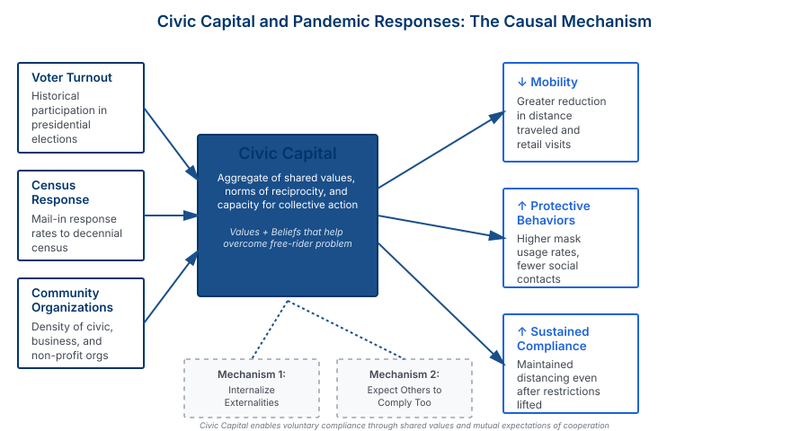

Civic Capital and Social Distancing during the COVID-19 Pandemic
Abstract
We study the role of civic capital in facilitating collective action during the early stages of the COVID-19 pandemic. Using real-time cellphone location data and variation in social distancing recommendations across U.S. counties, we examine whether areas with higher civic capital exhibited greater compliance with social distancing guidelines when formal enforcement was limited.
We find that counties with higher civic capital—measured by voter turnout, census response rates, and participation in community organizations—experienced significantly larger reductions in mobility and greater social distancing compliance following public health recommendations. A one-standard-deviation increase in civic capital is associated with a 10-15% greater reduction in movement. These effects are largest in the early weeks of the pandemic, before the widespread adoption of formal restrictions, suggesting that civic capital enables communities to coordinate on socially beneficial behaviors even without enforcement.
Key Findings
Civic Capital Drives Compliance
Communities with higher civic capital showed 10-15% greater reductions in mobility and stronger adherence to social distancing recommendations, even before mandatory restrictions.
Early Response Advantage
The civic capital effect was strongest in the critical early weeks of the pandemic, when voluntary compliance was most important for slowing disease spread.
Health Outcomes
Higher civic capital areas experienced slower initial growth rates of COVID-19 cases and deaths, suggesting that collective action had real public health consequences.
Substitute for Enforcement
Civic capital acted as a substitute for formal enforcement mechanisms, with the strongest effects observed where government capacity or willingness to enforce restrictions was limited.
Figures
Figure 1: Key Empirical Results
Summary of regression coefficients and aggregate effects showing how civic capital measures translate into social distancing compliance during the COVID-19 pandemic. The four panels illustrate: (1) regression coefficients for state mandates and national guidelines; (2) aggregate effects comparing low and high civic capital counties; (3) mask usage patterns by civic capital level; and (4) individual-level effects of trust in others on social contact reductions.

Figure 2: Civic Capital Mechanism
Conceptual diagram of how civic capital measures translate into pandemic behavioral responses. Civic capital—aggregated from voter participation, census response, and community organization density—shapes behavioral outcomes through two primary mechanisms: (1) individuals internalizing externalities (caring about community welfare), and (2) mutual expectations that others will also comply with social norms.

Research Contribution
This paper makes several contributions to our understanding of civic capital and collective action. First, we provide large-scale empirical evidence that civic capital facilitates coordination on socially beneficial behaviors during crises. While prior research has documented correlations between civic capital and various social outcomes, the pandemic provides a unique natural experiment where the returns to collective action were clear and immediate.
Second, we demonstrate that civic capital can act as a substitute for formal enforcement and government capacity. This has important implications for understanding how communities respond to crises and for evaluating policies that rely on voluntary compliance. The results suggest that investments in civic capital may have important option value during emergencies when formal institutions are overwhelmed or slow to respond.
Third, we contribute to the growing literature on the political economy of the COVID-19 pandemic. Our findings show that beyond partisan politics and policy choices, underlying social capital shapes how communities respond to public health threats. This heterogeneity in collective action capacity has important implications for pandemic preparedness and response strategies.
Measurement and Identification
We measure civic capital using three complementary proxies: historical voter turnout rates (2016 presidential election), census mail-in response rates (2010 census), and density of community organizations (from the County Business Patterns database). These measures capture different dimensions of civic engagement and cooperative behavior.
Our identification strategy exploits the timing of public health recommendations and the availability of real-time mobility data from cellphone pings. We use a difference-in-differences approach comparing mobility changes in high versus low civic capital counties before and after social distancing recommendations, controlling for a rich set of demographic, economic, and political characteristics.
Policy Implications
Our findings highlight the importance of social capital for crisis response and pandemic preparedness. Policies that strengthen civic institutions and community engagement may have important positive externalities during emergencies by facilitating voluntary compliance with public health measures.
The results also suggest that public health communication strategies should be tailored to account for variation in civic capital across communities. In areas with lower civic capital, more intensive enforcement or stronger incentives may be necessary to achieve similar levels of compliance. Understanding this heterogeneity can improve the effectiveness and equity of pandemic response policies.